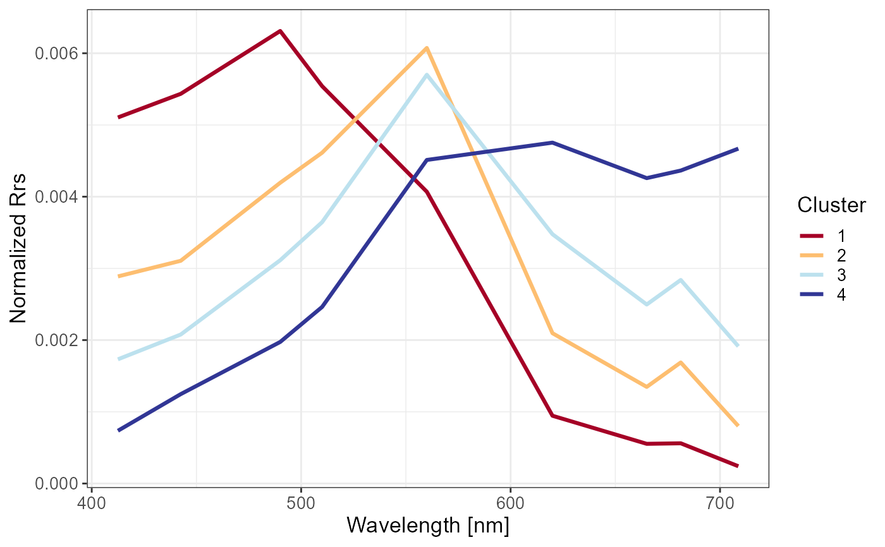
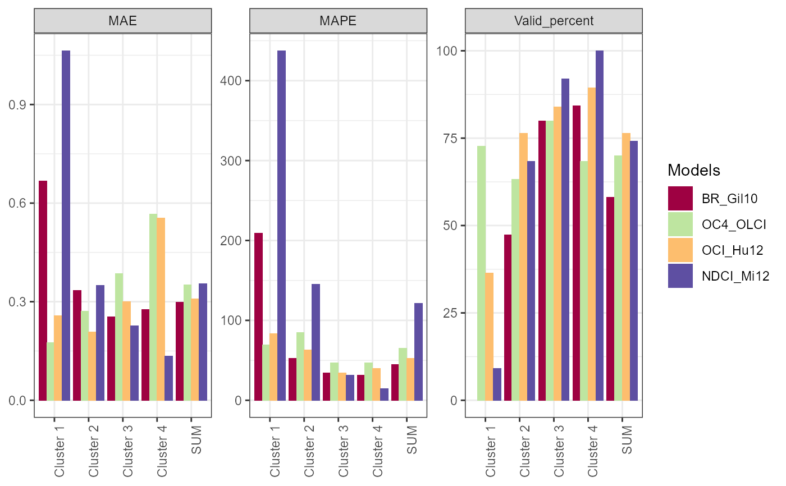

R/Algorithms_assessment.R
Assessment_via_cluster.RdCalculate error metrics for all algorithm per cluster
Assessment_via_cluster( pred, meas, memb, metrics = c("MAE", "MAPE"), log10 = FALSE, total = TRUE, hard.mode = TRUE, cal.precision = FALSE, valid.definition = list(negative = FALSE, percent = 0.6), na.process = FALSE, plot.col = FALSE )
| pred | prediction of Chla |
|---|---|
| meas | in-situ measurement of Chla |
| memb | membership value matrix |
| metrics | metrics need to be calculated |
| log10 | Should pred and meas be log10-transformed? (default as |
| total | Whether to calculate summarized metrics (default as |
| hard.mode | If |
| cal.precision | Whether to calculate precision (only support for vectorized metrics), default as |
| valid.definition | The definition of valid prediction, default as
|
| na.process | na.process and choose to statistic NA value percent |
| plot.col | option to plot col result for selected metrics (default as |
Results of Assessment_via_cluster are returned as a list including:
A list of the selected metric values for all algorithms. Valid_percent
would be included if na.process are set as TRUE
Bar plots by using ggplot function for metrics value at every cluster.
Dataframe for plotting res_plot. I just keep it in case of plotting other types
res_plot added on facet_wrap.
input parameters of Assessment_via_cluster
If the cal.precision is TRUE, the hard.mode == TRUE is used. In that case,
mean and sd calculation is conducted for hard mode based on result from cal.metrics.vector.
Other Algorithm assessment:
Getting_Asses_results(),
Sampling_via_cluster(),
Score_algorithms_interval(),
Score_algorithms_sort(),
Scoring_system()
#> Warning: package 'ggplot2' was built under R version 3.6.3library(magrittr) library(stringr) data("Nechad2015") x <- Nechad2015[,3:11] wv <- gsub("X","",names(x)) %>% as.numeric set.seed(1234) w <- sample(1:nrow(x), 100) x <- x[w, ] names(x) <- wv nb = 4 # Obtained from the vignette "Cluster a new dataset by FCMm" set.seed(1234) FD <- FuzzifierDetermination(x, wv, stand=FALSE)#> Warning: Parameter stand has been deprecated. Please use do.stand!#>Chla <- Nechad2015$X.Chl_a..ug.L.[w] Chla[Chla >= 999] <- NA dt_Chla <- run_all_Chla_algorithms(x) %>% as.data.frame dt_Chla <- data.frame(Chla_true = Chla, BR_Gil10 = dt_Chla$BR_Gil10, OC4_OLCI = dt_Chla$OC4_OLCI, OCI_Hu12 = dt_Chla$OCI_Hu12, NDCI_Mi12= dt_Chla$NDCI_Mi12) %>% round(3) w = which(!is.na(dt_Chla$Chla_true)) dt_Chla = dt_Chla[w,] memb = result$res.FCM$u[w,] %>% round(4) Asses_soft <- Assessment_via_cluster(pred = dt_Chla[,-1], meas = dt_Chla[,1], memb = memb, log10 = TRUE, hard.mode = FALSE, na.process = TRUE, plot.col = TRUE) Asses_soft$res_plot_facet#> #> #> | | BR_Gil10| OC4_OLCI| OCI_Hu12| NDCI_Mi12| #> |:---------|--------:|--------:|--------:|---------:| #> |Cluster 1 | 0.667| 0.175| 0.257| 1.064| #> |Cluster 2 | 0.333| 0.272| 0.208| 0.350| #> |Cluster 3 | 0.254| 0.386| 0.300| 0.226| #> |Cluster 4 | 0.276| 0.567| 0.555| 0.135| #> |SUM | 0.299| 0.352| 0.309| 0.355|#> #> #> | | BR_Gil10| OC4_OLCI| OCI_Hu12| NDCI_Mi12| #> |:---------|--------:|--------:|--------:|---------:| #> |Cluster 1 | 208.83| 69.50| 83.29| 437.43| #> |Cluster 2 | 52.79| 85.07| 62.83| 144.97| #> |Cluster 3 | 34.49| 47.17| 34.41| 31.13| #> |Cluster 4 | 31.46| 47.18| 39.64| 14.42| #> |SUM | 45.00| 65.07| 52.64| 121.14|